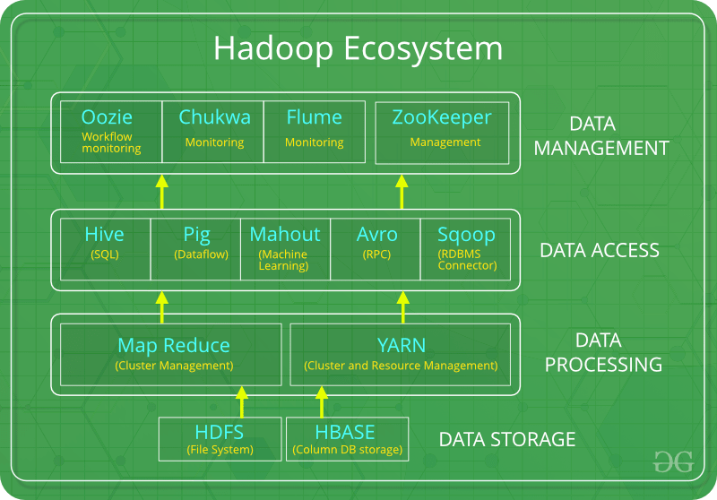
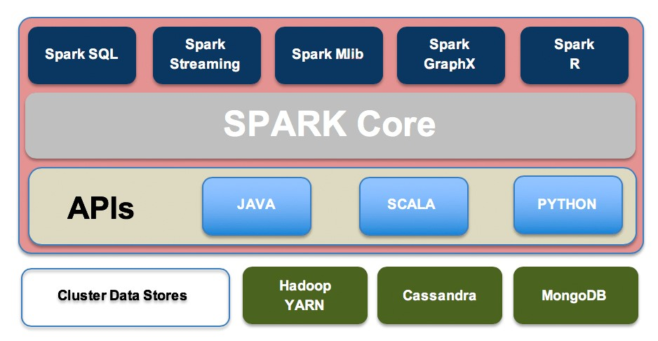
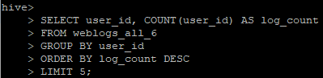
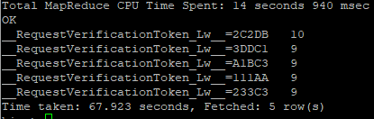
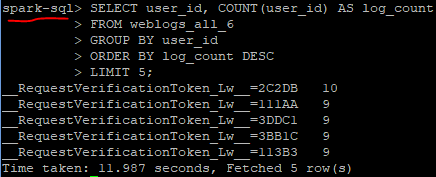

From the archive
Apache Hive vs. Spark: A Speed Comparison with a SQL Query
How Hadoop's pieces fit together, and a timed SQL query on an EC2 cluster showing why Spark SQL outruns Hive.
Introduction
In the world of big data, large datasets are often larger than the hard drive memory in our personal computer and data must be stored in the cloud as a result. Extracting data from large datasets can quickly cause performance and scalability issues since database systems are not able to scale horizontally. This causes the query process to be extremely slow and inefficient. To solve this problem, two popular frameworks can help process large datasets: Hive and Spark. Both frameworks are integrated with the Apache Hadoop ecosystem. To understand how Hive and Spark can process large datasets, one must understand how the Hadoop ecosystem works.
What is Apache Hadoop?
Apache Hadoop is an open source framework intended to make it easier to work with big data in the cloud. It is a platform that utilizes multiple modules to provide an efficient solution to everyone’s big data needs and stores data across clusters, making it easier to do distributed computing and storage. Hadoop uses three fundamental components: HDFS, MapReduce, and YARN. Hadoop Distributed File System (HDFS) is the data storage component of the ecosystem – creates several replicas of the data block distributed across different clusters. HDFS architecture consists of two different nodes: name node and data node, together they help coordinate the different clusters storing data. When retrieving the data from HDFS, the data processing layer works in the backend to help allocate the proper resources for the Hadoop System. In Hadoop 1.0, MapReduce and YARN was one module for the purpose of data processing, but in Hadoop 2.0 they are split apart, this allows YARN (the resource negotiator) to be built on top of alternatives of MapReduce. One of those alternatives is Spark.

Apache Hive and Spark
It’s important to note some technical differences between the two frameworks and how they are used in the Hadoop Ecosystem. First, Hive is a data warehouse system, whereas Spark is a framework that can access external distributed data stores. Hive has to depend on MapReduce for processing the data it queries through SQL, but Spark has it’s own Spark SQL library built in the framework. The differences of each architecture can be shown by testing the time it takes to complete an SQL query using each system. We will use an Amazon EC2 instance with Apache Hadoop already setup with both Hive and Spark. Using weblog data, a table has already been created to run a simple query , which will find the top 5 most active users in the dataset. With the Hive/MapReduce Method, it took about 68 seconds to get the results from our query. Using that same query with Spark SQL took only about 12 seconds to complete.




Why Spark SQL is Faster than Hive for SQL Queries
The biggest difference between Spark and Hive has to do with how the data is being processed in the Hadoop Ecosystem. Since Hive must use MapReduce for data processing, it is much slower than Spark, which runs in memory for a faster processing speed. MapReduce does not run in memory; it has to read the data from disk for each query. This is why Spark’s framework is preferred when doing real-time analytics, it’s speed is unmatched by MapReduce.
References:
https://www.geeksforgeeks.org/hadoop-ecosystem/
https://logz.io/blog/hive-vs-spark/#:~:text=Hive%20and%20Spark%20are%20both, more%20modern%20alternative%20to%20MapReduce.
Originally published July 2020. Moved to the new site in October 2026 with the text unchanged.